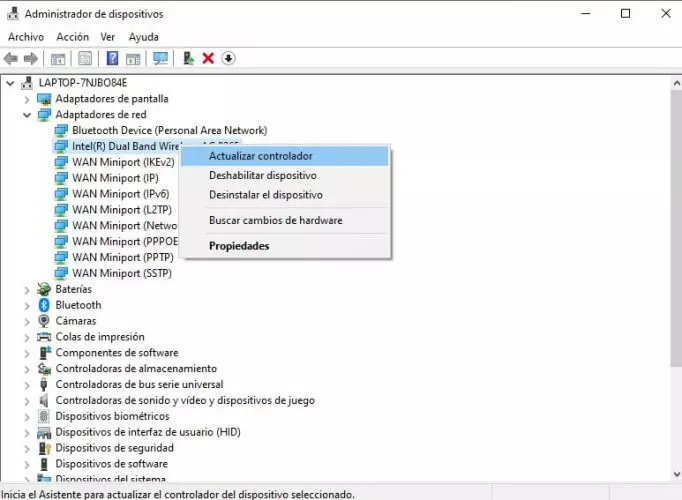
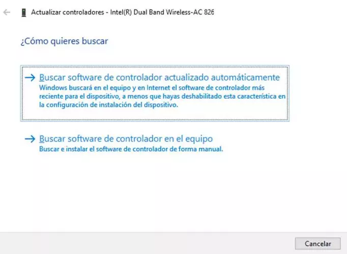
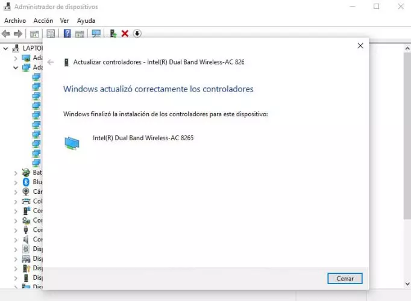

Actualizar el driver de red
El hecho de tener unos drivers obsoletos, pueden provocarnos ciertos problemas en el sistema, no solo con nuestra conexión de red sino con el correcto funcionamiento de otros componentes hardware de nuestro equipo.
En este sentido, se puede actualizar los drivers de red u otro tipo de controladores en Windows 10 desde el administrador de dispositivos
- Abrir el Administrador de dispositivos
- Desplegamos la opción Adaptadores de red
- Seleccionamos nuestra tarjeta de red 
- Hacemos clic sobre ella con el botón derecho del ratón
- Elegimos la opción Actualizar controlador
- En la nueva ventana que se abre seleccionamos la opción Buscar software de controlador actualizado automáticamente 
- Esperamos a que el proceso se ejecute
- seleccionamos nuestro adaptador o tarjeta de red y hacemos clic sobre ella con el botón derecho del ratón. Esto nos mostrará un menú contextual en el que encontraremos la opción Actualizar controlador. 
Si Windows no encuentra un controlador nuevo para el adaptador de red, lo mejor es ir a la web del fabricante del ordenador y descargar allí el controlador del adaptador de red más reciente buscando el nombre o número de modelo exacto. El problema es que si no tienes acceso, esto lo tendrás que hacer en un PC que sí esté conectado y guardar el controlador en un USB para instalarlo en tu PC después. No estaría de más que por si acaso lo hicieras ya aunque no tengas problemas, ya que así puedes echar mano rápido del controlador en caso de que esto pase.